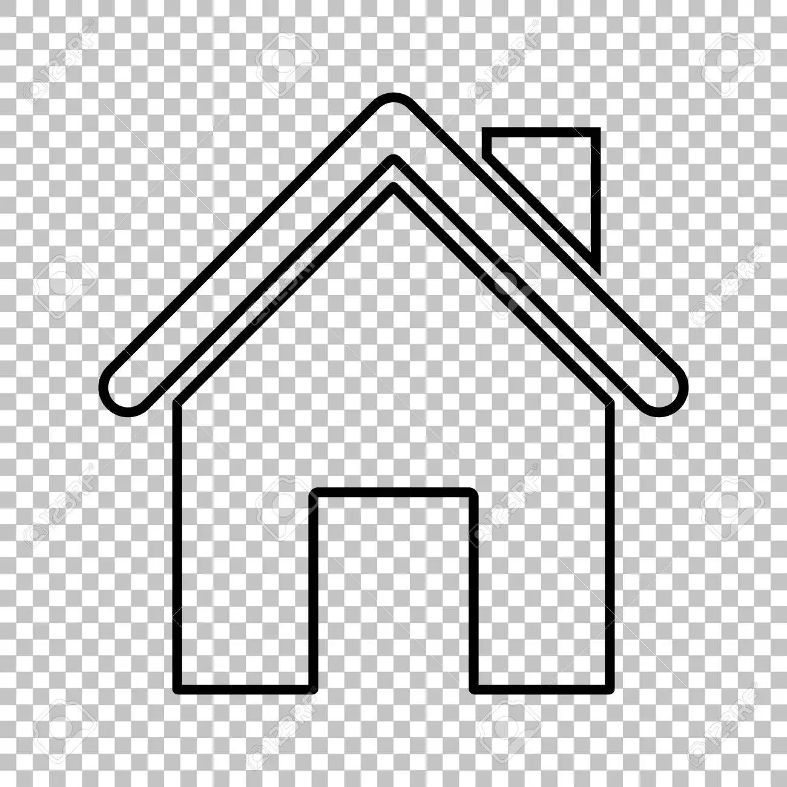

Escuela N° 58 "Sagrada Familia"
La Escuela
Autoridades
Calendario Académico
Preinscripción
Contacto
CGE

Calendario Académico 2022-2023
Inscripciones
Reinscripciones
Cursada
Recuperatorios
Fin Ciclo Lectivo
10/02/2022 -- 10/03/2022
11/03/2022 -- 20/03/2022
21/03/2022 -- 27/11/2022
28/11/2022 -- 28/12/2022
29/12/2022